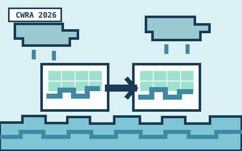

Modeling compound flood hazards at CWRA 2026
I presented “Assessing LISFLOOD-FP and SFINCS for Modeling Compound Flood Hazards in Canada” at the 79th Annual National Canadian Water Resources Association Conference in Winnipeg, Manitoba.
CWRA 2026 conference